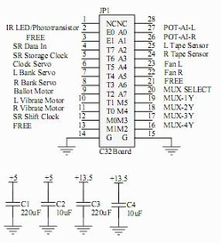
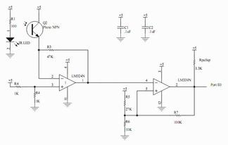
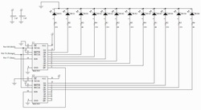
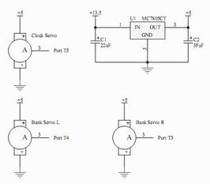
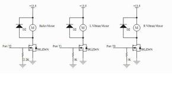
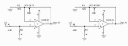
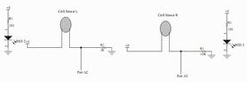
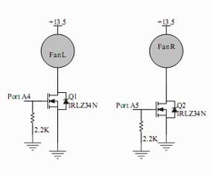
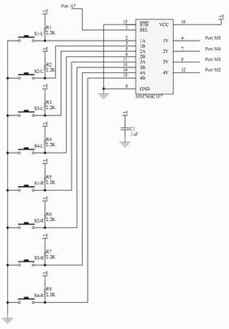

Electrical Design
C32 Connector

{kind=link}
This shows all outbound connections from the C32 connector to other electrical circuitry. A 220uF electrolytic capacitor and 10uF tantalum capacitor was used to bypass each power supply.
| c32_connections_crop.pdf |
IR Ballot Sensor

{kind=link}
This circuit determines whether the user has inserted the ballot. An IR LED is positioned directly adjacent to an IR photo-transistor. When the ballot is inserted, it blocks the IR radiation causing the output to change from high to low. A LM324N and LM339A with hysteresis were used to condition the signal transmitted from the photo-transistor. A 0.1uF ceramic capacitor was used to bypass each chip.
| ir_ballot_sensor.pdf |
LED Shift Registers

{kind=link}
To control the 12 LED's on the game board, we cascaded two shift registers with registered output. With each shift clock pulse, data was shifted into the storage register. When the storage clock was pulsed, all data in the storage register was sent to the outputs. The red and green LED's have a 150 ohm resistor to limit current and the blue LED's have a 68 ohm resistor. A 0.1uF ceramic capacitors was used to bypass each chip.
| led_shift_registers.pdf |
Servos

{kind=link}
One servo regulated the game clock and the other two controlled the user bank accounts. To avoid overdrawing current from the 5V power supply, we used a separate voltage regulator to provide 5V for the servos.
| servos.pdf |
DC Motors

{kind=link}
We used a geared DC motor to retrieve the ballot at the end of each game. Each of the other DC motors were mounted to a money lever. These unbalanced motors vibrated the lever after an invalid transaction. All three motors were controlled using N-Channel power MOSFET's with a pull down gate resistor.
| dc_motors.pdf |
Potentiometers

{kind=link}
The potentiometers determined the amount of money to invest. We created a linear relationship between position and output voltage by placing the potentiometer in the op amp's negative feedback path. Resistors R3/4 and R7/8 were selected empirically to maximize the potentiometer's range.
| potentiometers.pdf |
Tape Sensors

{kind=link}
To read the political party card, a red LED was used to illuminate the inserted card. Depending on the card's color, the CdS photocell changed resistance by a varying amount. We identified the color based on the change in voltage across the photocell. This circuit provided a nonlinear voltage with respect to card color, which increases the separation between colors. Each card reader was independently calibrated, and the series resistors were chosen to achieve equivalent output ranges.
| tape_sensors.pdf |
Fans

{kind=link}
The fans were used to eject the political party card from the game console. Each fan was controlled by a N-Channel power MOSFET with a pull down gate resistor. The body diodes provided sufficient protection from inductive spikes.
| fans.pdf |
Multiplexer

{kind=link}
We used four 2:1 multiplexers to check the eight region buttons. The select line determined which input was sent to the output. Each button was tied high with a pull-up resistor and driven low when a button was pressed. A 0.1uF ceramic capacitors was used to bypass each chip.
| multiplexer.pdf |